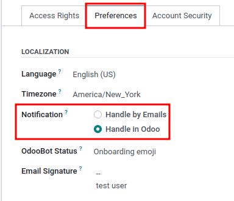
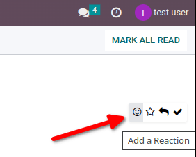
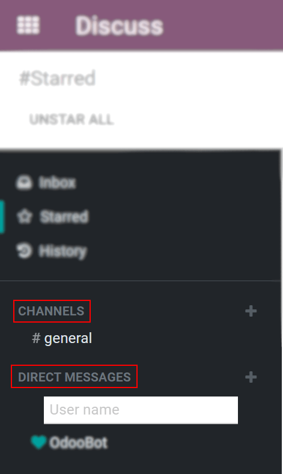

Conversaciones¶
Conversaciones de Odoo es una aplicación de comunicación interna que le permite a lo usuarios comunicarse mediante mensajes, notas y archivos adjuntos, todo mediante una ventana de chat que funciona no importa en qué aplicación esté y en el tablero de Conversaciones.
Seleccione sus preferencias de notificaciones¶
Para acceder a las preferencias específicas del usuario en la aplicación Conversaciones vaya a .
El campo Notificación estará configurado de forma predeterminada con la opción Manejar por correo electrónico. Con este ajuste Odoo enviará un correo de notificación cada que envíe un mensaje desde el chatter, una nota con una mención @ (también desde el chatter) o una notificación para un registro que el usuario sigue. También enviará una notificación al cambiar de etapa (si configuró el envío de un correo, por ejemplo, si una tarea se marca como Hecha).
Si selecciona Gestionar en Odoo, las notificaciones se muestran en la bandeja de entrada de la aplicación Conversaciones. Con los mensajes es posible: responder con un emoji al Agregar una reacción, o puede responder al mensaje si hace clic en Responder. También puede marcar mensajes como por realizar si hace clic en la estrella, puede anclarlos si hace clic en Fijar, o incluso marcar el mensaje como no leído.
Si hace clic en Marcar como pendiente en un mensaje, hará que aparezca en la página Destacados. Si hace clic en Marcar como leído el mensaje se moverá a Historial.

Empiece a chattear¶
La primera vez que un usuario inicia sesión en su cuenta, OdooBot envía un mensaje donde se le pedirá permiso para enviar notificaciones de chats a su computadora. Si lo acepta, el usuario recibirá notificaciones push en su computadora de todos los mensajes que reciba, sin importar en qué parte de Odoo se encuentre el usuario.

Truco
Para dejar de recibir notificaciones de escritorio, restablezca la configuración de notificaciones del navegador.
Para iniciar un chat, vaya a la aplicación Conversaciones y haga clic en el icono + (más) que se encuentra a un lado de Mensajes directos o Canales en el menú izquierdo del tablero.
Una empresa también puede crear canales privados y públicos sin dificultades.
Menciones en el chat y en el chatter¶
Para mencionar a un usuario en un chat o en un chatter, escriba @nombre-de-usuario. Para mencionar un canal, escriba #nombre-del-canal. El usuario mencionado recibirá una notificación en su bandeja de entrada o por correo electrónico, dependiendo de los ajustes de comunicación.

Truco
Cuando se menciona a un usuario, la lista de búsqueda (lista de nombres) sugiere valores, en primer lugar, en función de los seguidores de la tarea y, en segundo lugar, en función de los empleados. Si el registro que se busca no coincide con un seguidor o un empleado, el alcance de la búsqueda se convierte en todos los contactos.
Estado del usuario¶
Es útil ver qué están haciendo sus colegas y qué tan rápido pueden responder a los mensajes, por eso debe verificar su estado. El estado se muestra en el lado izquierdo de el nombre de un contacto en la barra lateral de:guilabel:Discusiones, en el menú de mensajería y en el chatter.
Verde = en línea
Naranja = ocupado
Blanco = sin conexión
Avión = fuera de la oficina